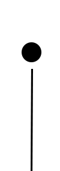

meet the team
Over the course of the last three years, EWH has grown into a multi-disciplinary team with students in electrical, mechanical, biological, computer, and chemical engineering, as well as global health and economics. The project team is comprised of three technical sub-teams (bio and structural, electrical, and CS) and a business team. Together, the sub-teams collaborate on different aspects of a project to create a robust and innovative low-cost engineering solution to medical problems in developing countries. While gaining technical skills ranging from CADing and machining to designing analog circuits, members of the project team also gain valuable skills in project management, product design, and cross-functional collaboration.



Electrical
The Electrical sub-team is comprised of electrical and computer engineering students who apply theory and systems-level design to the production of innovative hardware products. The team touches a wide array of fields spanning embedded systems, integrated circuits, and analog circuit design. In the past, the electrical team has undertaken an expansive project to redesign a simplified vital signs monitor that could be networked via a base station, made in close collaboration with the CS sub-team. Projects are always evolving and members need to continuously adapt to learn and grow their skills. In any given year, a member could be working on an entirely new sub-field of the team. Cross-collaboration between teams is therefore key to ensure the robust manufacturing of reliable devices that meet the desired end use of the communities we work with.

Samir Durvasula
Team Lead
2017

Manish Patel
2017

Justin Selig
2017

Adam Chung
2018

Vidya Ramesh
2018

Sagar Vadallia
2018

Sonia Appasamy
2019
Biological
The Biological/Structural sub-team focuses on the design and construction of the passive components of our devices. The team has undertaken a variety of projects including a passively cooled vaccine refrigerator, an anti-microbial baby holster, and an autologous blood transfusion device. We are currently comprised of students from several engineering disciplines including mechanical, chemical, and biological engineering, as well as students majoring in the sciences. The team is responsible for a number of tasks during the design, including conducting market research and developing specifications for the proposed device. During the creation of the prototype, the team uses computer aided design software to create designs that are realized through construction from wet lab to machine shop. The team is also responsible for testing each iteration of the prototype and redesign for optimization of the final device.

Software
The Computer Science sub-team is comprised of computer and software engineering students who focus on creating the software components of the projects we work on. Members of the sub-team develop their skills in app-dev, data visualization, and full stack web development. In the past, this sub-team has collaborated with the electrical sub-team to create the web application and data network for the networked vital signs monitor, as well as software development for a video-based heart rate monitor. Each year, members develop coding and integration skills as they work to make web and app designs user-friendly and create smarter ways to sort data.


Business
The newly formed business sub-team consists of passionate students from distinct academic backgrounds who exercise and sharpen their business acumen. EWH Business focuses on diverse business tasks to further benefit the chapter, ranging from managing the financial state of EWH to rebranding the Cornell EWH image, whether it be a revised sponsorship package or an updated, modern website. Other activities include drafting and submitting design proposals to competitions and contacting companies regarding funding and sponsorship. All of these responsibilities require critical thinking, proper communication with Bio/Structural and Electrical/CS subteam, along with establishing a rapport between our clients to foster a positive culture.

Where We've Gone
Alumni from EWH have gone to do great things after graduating. Team leads from previous years are listed below.